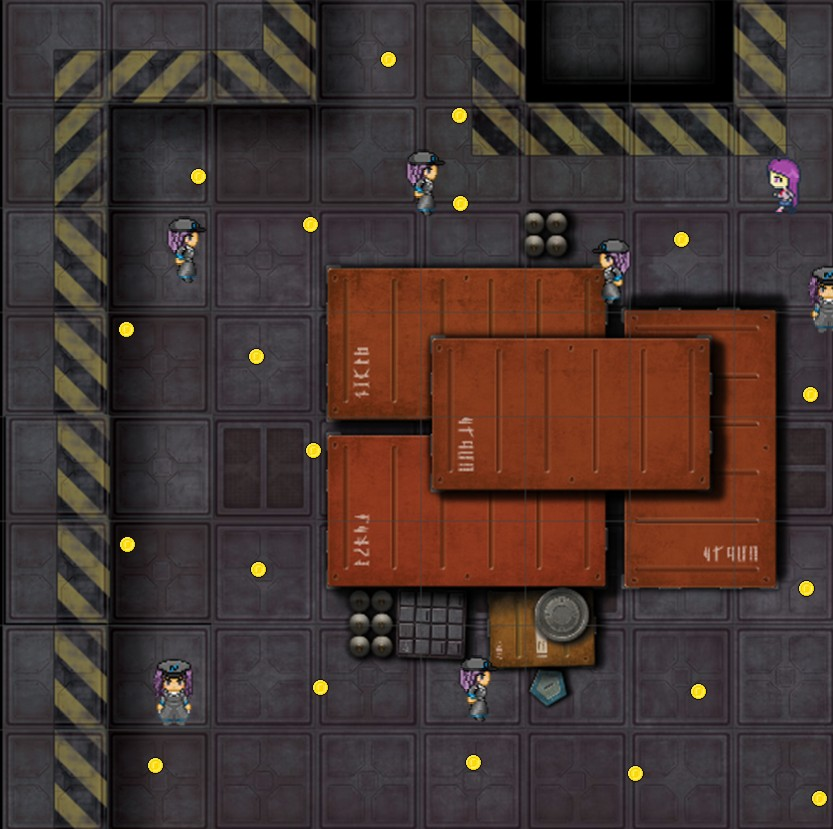

"Cargo Clash" project was developed as part of the programming module. The objective of this exercise was to design a game in C++ by applying the principles of object-oriented programming and using the SFML library.
The game is inspired by "The Binding of Isaac", while also capturing the spirit of classic arcade games: a top-down perspective, labyrinth-like levels, enemies to avoid or defeat, and coins to collect.
The player’s main objective is to progress through different levels while collecting all the coins scattered across the map. Along the way, the player must either avoid enemies or eliminate them using projectiles. The game features several states, including a main menu, two tutorial levels, two main levels, a transition screen, and both victory and defeat screens.
